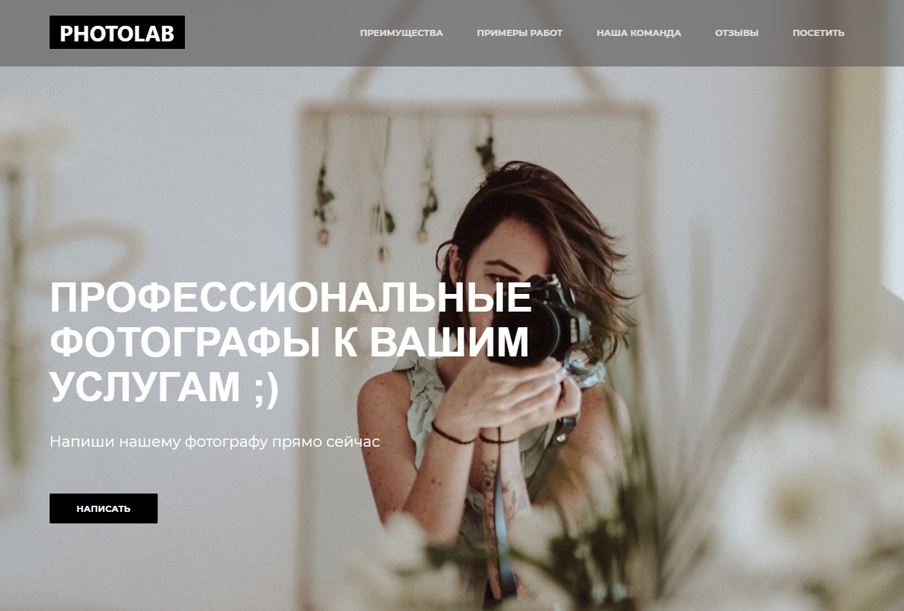

PhotoLab
PhotoLab – созданный мной сайт фотостудии с очень приятным дизайном.
После
того как Вы посетите сайт, то сразу сможете узнать всю необходимую информацию о фотостудии,
благодаря очень простому интерфейсу.
С полноэкранным слайдером PhotoLab Вы можете увидеть примеры фотографии, также Вы можете сразу
познакомится и связаться с любым из фотографов, посмотреть отзывы и посетить студию.
Нажав на ссылку далее, вы можете
посмотреть данный сайт.
Мои перспективы в веб-разработке
Вы скажите: "Какие перспективы могут быть у того у кого из выполненных
работ всего пара сайтов?". Не знаю, но во всяком случае не стоит судить книгу по первой
странице. Мой путь только начался, точнее будет сказать он только скоро начнется и я надеюсь,
что в моей книге будет несколько томов. Данная профессия очень обширна, интересна и очень быстро
развивается. Поэтому я хочу изучать её, ведь все сайты которые Вы видели сделаны
веб-разработчиками, можно сказать, что они и создали Интернет такой, какой он есть сегодня.
Спасибо, что посетили мой сайт!
Надеюсь Вы оценили работу сайта, дизайн и Вам все понравилось. Данный
сайт-портфолио был создан с нуля, он имеет сугобо индивидуальный дизайн, который выполнен в
минималистичном стиле, на экране нет ничего лишнего, нет вызывающих цветов и баннеров. Также
стоит отметить его "легкость", то есть малое количество изображений, что позволяет загрузить
страницу быстрее и его адпативность на мобильных устройствах.